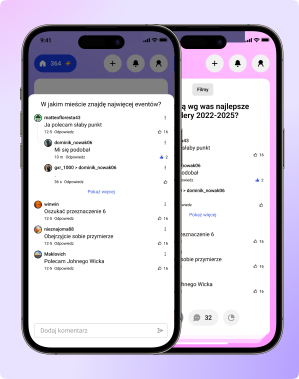

CEL
Zaprojektowanie aplikacji, która zachęca do częstych, krótkich interakcji, a jednocześnie dostarcza
wartościowych insightów. Klientowi zależało na połączeniu lekkości znanej z aplikacji rozrywkowych z
funkcjonalnością narzędzia do zbierania opinii. Zakres pracy obejmował zaprojektowanie całego UX – od
koncepcji, przez architekturę informacji, aż po finalny interfejs.
PROBLEM DO ROZWIĄZANIA
Większość aplikacji społecznościowych skupia się na biernym konsumowaniu treści, a narzędzia ankietowe często są
skomplikowane i mało angażujące. Wyzwaniem było stworzenie rozwiązania, które umożliwia szybkie wyrażanie
opinii, nie obciążając użytkownika nadmiarem decyzji i formularzy, a przy tym dostarczając dodatkowe dane o użytkownikach.
Mając na uwadze, że wiek grupy docelowej jest bardzo szeroki, interfejs musiał być czytelny.

KOMENTARZE
Sekcja komentarzy została zaprojektowana na bazie popularnych aplikacji (Tiktok, Youtube), by użytkownik używał już znanego mu schematu.
Na komentarze nie tylko składa się okno ich dodawania, ale także typ ankiety z pytaniem otwartym. Wtedy część komentarzy jest widoczna pod pytaniem.
